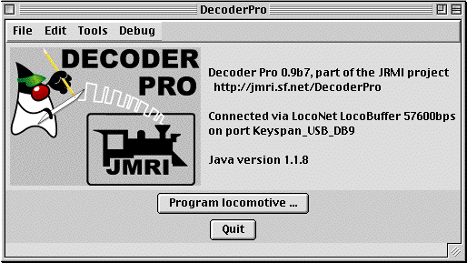
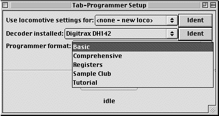
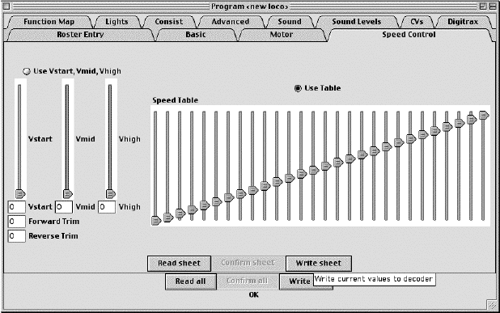
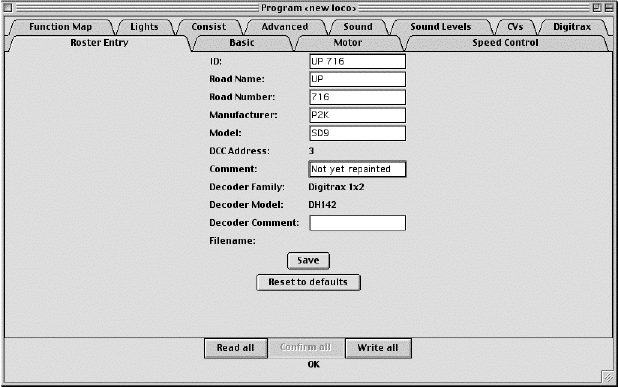
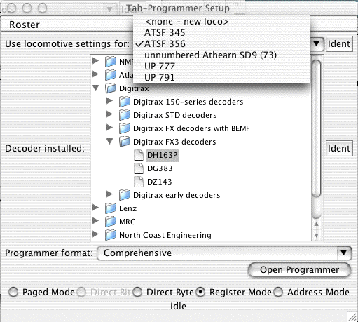

Version 1.1 is released! The updated production version 1.1 is available for download via the README page. Thanks and congratulations to all who contributed!
DecoderPro runs on Macintosh, Windows, Linux and OS/2 computers. Each type has a different download file and install instructions. The download links and install instructions can be found from the README page.

The DecoderPro symbolic programmer is meant to improve this. It is configured using text files, so that it can be adapted to additional decoder types easily. It talks to the decoders using the JMRI programming interface, so that it can run on any computer and layout hardware that JMRI has been ported to. And since the code is available via open source, if you want to improve on it you can.
You can skip directly to the README page for instructions on downloading, installing and connecting Decoder Pro to your DCC system.

Click the "Program locomotive" button to start. You'll get a new window to configure the programmer with information about a specific type of decoder, or an existing locomotive:

For example, to start working with a newly-installed decoder, you need to tell the programmer the decoder type so it can load information about the available settings. You can manually select the decoder type:

You can also click the adjacent "Ident" button to have the programmer read the decoder and attempt to identify it. While the programmer is talking to the decoder, status will be displayed in the bottom of the window; "Idle" or "OK" means that things are working. If it succeeds, it will select the decoder model in the selection box. Usually it will only be able to narrow the selection down to a few choices. Check that the right model is selected in the "Decoder Installed" box; update the selection if desired.
Some people prefer a very simple programmer, and some want to have access to every feature. To handle this, DecoderPro provides several displays.

As shipped, it comes with:
For this first pass through the program, we select "Comprehensive" in the lowest selection box.
Then, click "Open Programmer" to start working with the decoder. The actual programmer opens in a large window (shown reduced in size):

Each of the tabs selects a screen you can use to configure different aspects of the decoder. The "Basic" pane handles the address other settings you'll usually need. Using the buttons on the bottom of each screen are buttons that will read values from or write values to the decoder. For example, to do a basic configuration, enter values in the fields and click "Write sheet".
The variable fields are color coded to represent their states:
For example, after a "Read" the speed table values are shown as white:

When you modify a value, its marked as yellow:

Doing a write will set it back to white; doing a read will reset the value to the value in the decoder, and reset it to white.
Although having a name for an entire CV is nice, where this really helps is with complicated bit-mapped options. Digitrax FX lighting options, for example, require configuring two sets of bits into one CV. Another example is configuring a Soundtraxx decoder's mapping between functions and sounds. This involves bits and values spread across a dozen different CVs, but Decoder Pro turns that configuration job into simple checking of boxes:

Each selection box, checkbox or radiobutton is mapped to specific bit(s) in the decoder's CVs. The programmer handles the reading and writing of the CVs when the individual settings are changed. Instead of bits, you're working with the name or description from the decoder manual.
DecoderPro is meant to be easily configurable to add new types of decoders. You can also add programmer sheets, change their layout, and even redo the entire appearance. To do that, DecoderPro is driven by human-readable files in XML format. Documentation on the file contents exists, and we're working to continuously update it.
These files make it convenient to update DecoderPro to work with a new decoder. For example, the unique capabilities of a Digitrax DH142 appear on a "Digitrax" sheet:

Additional decoder-specific variables and sheets can be added via configuration files. By choosing an industry-standard XML format for decoder information, we hope to make it possible to create a complete library. Perhaps we can even interest manufacturers in documenting their products in this format.
Its also possible to program the CVs directly:

The "Read" and "Write" buttons allow you to work with individual CV contents. Changes made here will also update the specific values on the other screens.

Click "Save" to store the information; you'll be reminded to do this if you close the programmer with any unstored information.
The "ID" field at the top is the name you'll later use to select this locomotive. You can put whatever you'd like in it. For example, during the startup, you can select a specific locomotive to work with:

The "Ident" button uses the DCC address to select a specific locomotive in the roster. When you click "Open Programmer" with a specific locomotive selected, the programmer opens each sheet with the current values already present.
You can print the current locomotive's information from the programmer windows. From the "File..." menu, select "Print...", and fill out the dialog box that's presented.
There's more information on the Roster available on a separate page.
DecoderPro works with many DCC systems:
Please see the README file for more information on what equipment works with DecoderPro and for instructions for installing and operating it.
More information on how this works is available, as is more information on other JMRI tools.
The jmri-announce mailing list carries announcements of new versions, major changes, etc. This list is intended to be very low traffic; discussions, etc, should take place elsewhere. You can subscribe by sending the word "subscribe" in the subject or body of an email to jmri-announce-request@lists.sourceforge.net.
We have a "JMRI users" Yahoo group for general discussion. If you want to ask a question, get some help, or suggest some improvement, that discussion group is a good place. You can subscribe, browse posts, etc, at http://groups.yahoo.com/group/jmriusers/.